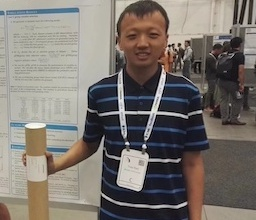

|
Yan Sun
|
 |
Postdoctoral Researcher,
Department of Statistics and Data Science,
University of Pennsylvania,
Philadelphia, USA.
E-mail: sunyan1@wharton.upenn.edu
|
About me
I am currently a Postdoctoral Researcher in the Department of Statistics and Data Science at the University of Pennsylvania,
jointly mentored by Prof. Edgar Dobriban,
Prof. Ian Barnett,
and Prof. Pratik Chaudhari,
working on model calibration and uncertainty quantification of machine learning models.
Before that, I was an applied scientist at Amazon.
I obtained my Ph.D. in 2022 from the Department of Statistics at Purdue University, supervised by Prof. Faming Liang.
I received my bachelor’s degree in 2017 from the Department of Mathematics in Chu Kochen Honors College, Zhejiang University.
Research Interests
I am interested in connecting statistical theories with advanced Machine Learning models, and with theoretical guidance, develop effective methods to improve practice.
Some topics that I have worked on include:
Sparse Deep Learning: Consistency, High Dimensional Variable Selection, Network Pruning.
Bayesian Statistics: Bayesian Neural Network, Posterior Concentration, Markov Chain Monte Carlo.
Uncertainty Quantification: Model Calibration, Asymptotic Distribution.
Preprints
Publications
Magnitude Pruning of Large Pretrained Transformer Models with a Mixture Gaussian Prior
Mingxuan Zhang, Yan Sun, Faming Liang
Journal of Data Science (2024).
[PDF]
Extended fiducial inference: toward an automated process of statistical inference
Faming Liang, Sehwan Kim, Yan Sun
Journal of the Royal Statistical Society: Series B (Statistical Methodology) (2024).
[PDF]
Deep network embedding with dimension selection
Tianning Dong, Yan Sun, Faming Liang
Neural Networks (2024).
[PDF]
Sparse Deep Learning for Time Series Data: Theory and Applications
Mingxuan Zhang, Yan Sun, Faming Liang
Advances in neural information processing systems (2023).
[PDF]
Nonlinear Sufficient Dimension Reduction with a Stochastic Neural Network
Siqi Liang, Yan Sun, Faming Liang
Advances in neural information processing systems (2022).
[PDF],
[Code]
A Kernel-Expanded Stochastic Neural Network.
Yan Sun, Faming Liang
Journal of the Royal Statistical Society: Series B (Statistical Methodology) (2022).
[PDF],
[Code]
Sparse Deep Learning: A New Framework Immune to Local Traps and Miscalibration.
Yan Sun, Wenjun Xiong, Faming Liang
Advances in neural information processing systems (2021).
[PDF],
[Code]
Learning Sparse Deep Neural Networks with Spike-and-Slab Priors.
Yan Sun, Qifan Song, Faming Liang
Statistics & Probability Letters (2021).
[PDF],
[Code]
Consistent Sparse Deep Learning: Theory and Computation.
Yan Sun*, Qifan Song*, Faming Liang
Journal of the American Statistical Association (2021).
[PDF],
[Code]
Extended stochastic gradient Markov chain Monte Carlo for large-scale Bayesian variable selection.
Qifan Song, Yan Sun, Mao Ye, Faming Liang
Biometrika, (2020)
[PDF]
Variable selection via penalized neural network: a drop-out-one loss approach.
Mao Ye*, Yan Sun*
International Conference on Machine Learning (2018).
[PDF]
|